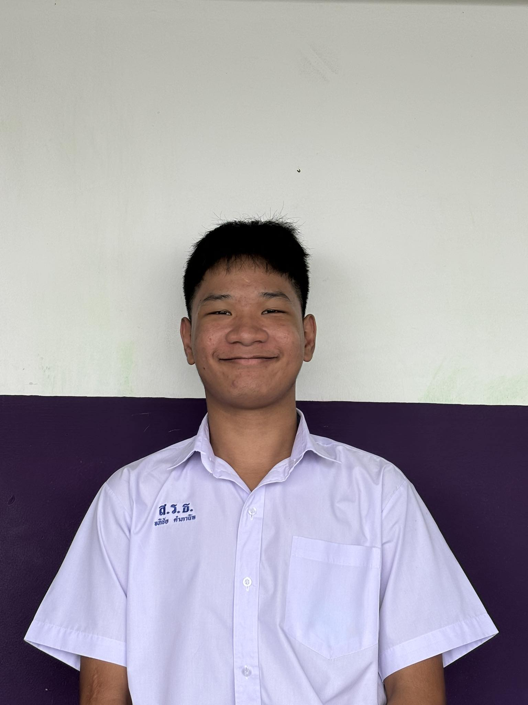
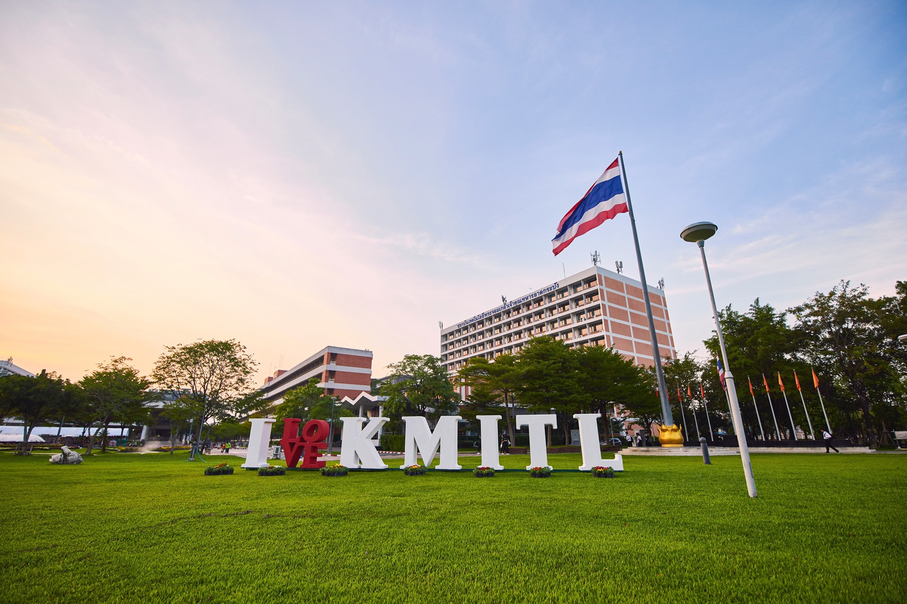

Computer Engineering - KMITL
King Mongkut's Institute of Technology Ladkrabang
ตั้งแต่เด็ก ผมก็รู้สึกหลงไหลในเทคโนโลยีและความเป็นไปได้ที่ไม่มีที่สิ้นสุดของมัน ความรู้สึกนี้นำให้ผมเริ่มรักในสายงาน วิทยาการคอมพิวเตอร์ และนั่นก็เป็นเหตุผลที่ผมเลือกเรียนต่อในสายงานนี้ที่สถาบันเทคโนโลยีพระจอมเกล้าเจ้าคุณทหารลาดกระบัง
ตลอดเวลาที่เรียนอยู่ที่นี่ ผมได้ซึมซับพลังของความเปลี่ยนแปลงในโลกของวิศวกรรมคอมพิวเตอร์ และรู้สึกตื่นเต้นกับสิ่งใหม่ๆ ที่ได้ค้นพบและพัฒนาอยู่เสมอ มั่นใจว่านี่แหละคือเส้นทางที่ผมอยากเดินต่อไป
ผมชื่อ อภิชัย คำภานิล เป็นนักเรียนมัธยมปลายจากโรงเรียนสิริรัตนธร เรียนกจบว่า "อ้า" ที่ได้ครับ ตอนนีผมกำลังมุ่งมั่นจะเข้าศึกษาต่อด้านวิชาการคอมพิวเตอร์ที่ลาดกระบัง เพราะผมสนใจเทคโนโลยีมาตลอด และอยากเป็นคนหนึ่งที่ได้พัฒนาระบบบ คอมพิวเตอร์ให้ล้ำหน้าขึ้นไปอีก
ผมหลงไหลในโลกของคอมพิวเตอร์ตั้งแต่เด็กๆ เลยครับ พอมีโอกาสเรียนรู้เรื่องที่เกี่ยวข้องกับคอมพิวเตอร์และคณิตศาสตร์ ซึ่งช่วยให้ผมได้ฝึกฝนทั้งการเขียนโปรแกรม อัลกอริทึม และการแก้ปัญหา ผมชอบเรียนคณิตศาสตร์กับฟิสิกส์ เพราะมันฝึกให้เราคิดอย่างมีเหตุผลและวิเคราะห์หาได้ดี ซึ่งเป็นทักษะสำคัญในการเข้าใจระบบคอมพิวเตอร์ที่ซับซ้อน
หนึ่งในผลงานที่ผมเคยทำ คือเขียนแอปพลิเคชันเล็กๆ สำหรับช่วยจัดการกิจกรรมบางอย่างในโรงเรียน ซึ่งตอนทำก็มีทั้งผิดพลาดและได้เรียนรู้จากมัน มันเป็นโอกาสที่ดีที่ผมมาได้ยิ่งขึ้น และได้ความรู้สึกภูมิใจในสิ่งที่ตัวเองทำ รวมถึงผลักดันให้ผมอยากเดินหน้าต่อไปในเส้นทางวิศวกรรมคอมพิวเตอร์ครับ
Name: Apichai Kmapanin
Nickname: Ah
Date of Birth: December 8, 2549
Age: 18
School: Sirirattanathorn School
Program: English-Mathematics
Hobbies: Write Code, Cover Music
A passionate Computer Engineering student at KMITL with a strong interest in technology and innovation. I enjoy creating solutions through programming and exploring the endless possibilities of computer science.
My goal is to contribute to the advancement of technology while continuously learning and growing in this dynamic field.
Sri Eiam Anusorn School
Foundation learning and early childhood development
Sri Eiam Anusorn School
Basic education with focus on fundamental subjects
Sirirattanathorn School
Intermediate education with expanding knowledge base
Sirirattanathorn School
English-Mathematics Program - Specialized in STEM subjects
King Mongkut's Institute of Technology Ladkrabang
Pursuing Bachelor's Degree in Computer Engineering
Participated in community service activities and educational workshops focused on global awareness and social responsibility.
Showcased creative works in school art exhibition, demonstrating artistic skills and creative expression.
Participated in mathematics competition focusing on creative problem-solving and mathematical innovation.
Attended intensive programming workshops to enhance coding skills and learn new technologies.
https://apichaiweb.netlify.app
https://srtlearn.netlify.app/
https://portfolio-apichai.netlify.app/
Lua
HTML
CSS
JavaScript
Certificate of achievement in student development program demonstrating leadership skills and academic excellence. This certificate recognizes outstanding performance in various educational activities and community service projects.
Advanced level certificate acknowledging continued growth in academic performance and leadership capabilities. This represents progression in student development with enhanced skills in critical thinking and problem-solving.
Certificate of participation in the prestigious Math Magic competition, demonstrating exceptional mathematical abilities and creative problem-solving skills. This achievement highlights excellence in STEM education and innovative thinking.